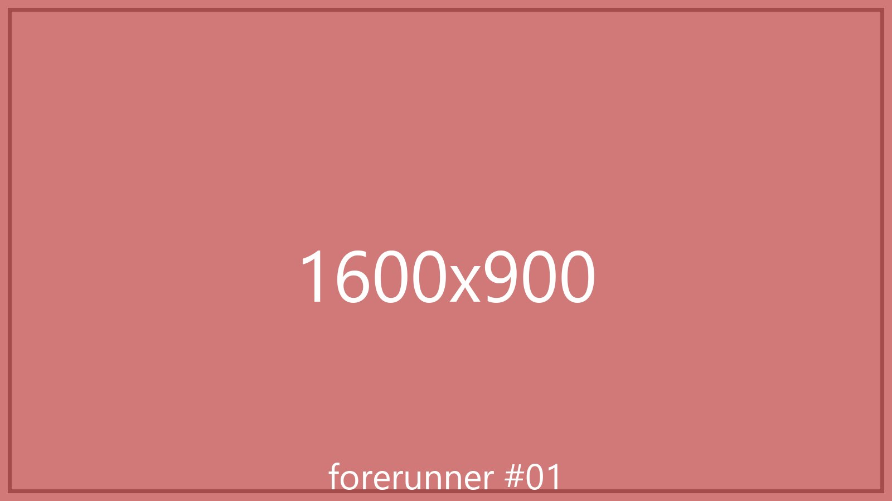
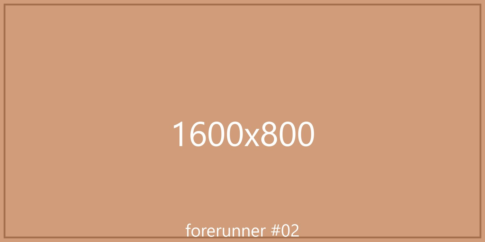
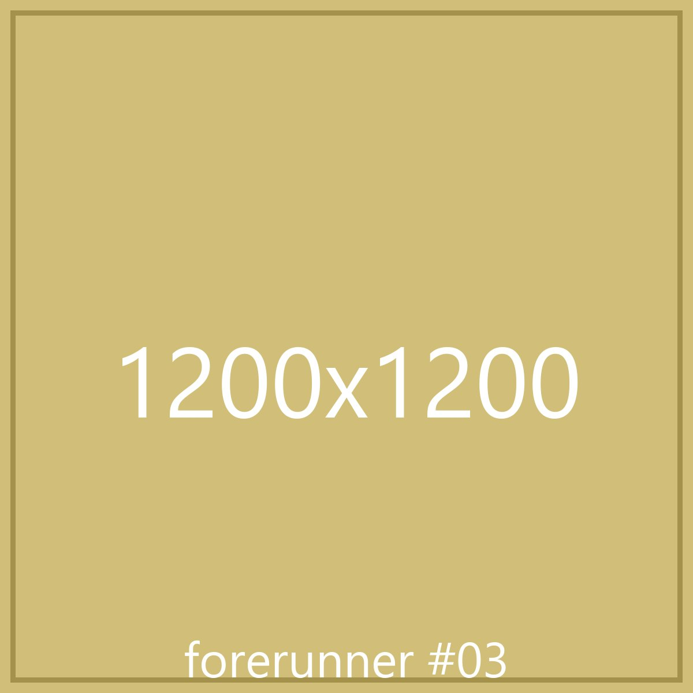

Forerunner 3
A web-based 3D visualization platform for space-domain awareness, fusing live satellite data and Google Earth tiling into one navigable scene.
As founding technical lead, I drove a fast-tracked, AI-augmented rebuild of a legacy WebGL/JS platform into a modern BabylonJS/TypeScript application, with UI/UX and 3D mesh optimization tuned for clarity under heavy live data. The lineage runs deep: Forerunner 2 indexed 500,000+ historical TLE records with time-traversal queries, and the orbital-debris work was presented at the 2024 Space Symposium.